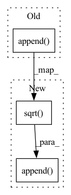

Pattern ID :38193
Before Change
jac_v = torch.reshape(jac_v, [jac_v.shape[0], -1])
jac_trace_approx = torch.mean(torch.sum(torch.pow(jac_v, 2.0)))
trace_jv.append(jac_trace_approx)
ipts_jac_trace_approx.append( torch.mean(torch.stack(trace_jv))) // Get averaged jacobian trace approximation
outputs_jacobians_approx.append(ipts_jac_trace_approx) // Get mean of jacobians of all model"s outputs
return _normalize_weights(torch.mean(torch.Tensor(outputs_jacobians_approx), dim=0), all_outputs_indices, alpha)After Change
jac_v = torch.reshape(jac_v, [jac_v.shape[0], -1])
jac_trace_approx = torch.mean(torch.sum(torch.pow(jac_v, 2.0)))
trace_jv.append(jac_trace_approx)
ipts_jac_trace_approx.append( torch.sqrt( torch.mean(torch.stack(trace_jv)))) // Get averaged jacobian trace approximation
outputs_jacobians_approx.append(ipts_jac_trace_approx)
mean_per_point = torch.mean(torch.Tensor(outputs_jacobians_approx), dim=0) // Get mean of jacobians of all model"s outputsIn pattern: SUPERPATTERN
Frequency: 3
Non-data size: 3
Instances Fragment ID: 109391508
Project Name: sony/model_optimization
Commit Name: 63ab7c6eb23382998914ee42eb4852d6ccf0eec6
Time: 2022-08-03
Author: ofirg6@gmail.com
File Name: model_compression_toolkit/core/pytorch/back2framework/model_gradients.py
M Class Name: AnonimousClass
N Class Name: AnonimousClass
M Method Name: pytorch_iterative_approx_jacobian_trace(8)
N Method Name: pytorch_iterative_approx_jacobian_trace(7)
M Parent Class:
N Parent Class:
M File Name: model_compression_toolkit/core/pytorch/back2framework/model_gradients.py
N File Name: model_compression_toolkit/core/pytorch/back2framework/model_gradients.py
M Start Line: 236
M End Line: 263
N Start Line: 199
N End Line: 271
Before Change
for size in range(1, block_size_max):
tmp = np.copy(eloc[:size*(nstep//size), :])
tmp = tmp.reshape(size, nstep//size, nwalkers).mean(axis=0)
evar.append( np.var(tmp))
plt.plot(np.array(evar))
plt.show()
After Change
nblock = nstep//size
tmp = np.copy(eloc[:size*nblock, :])
tmp = tmp.reshape(size, nblock, nwalkers).mean(axis=0)
evar.append( np.sqrt( np.var(tmp)/ (nblock-1)) )
np.savetxt("block.dat",np.array(evar))
print(evar)
plt.plot(np.array(evar))
plt.show() Fragment ID: 109391507
Project Name: nlesc-jcer/qmctorch
Commit Name: c3b381fc92b630d975b9184dc94abd978519fc62
Time: 2020-03-10
Author: renaud@ccpgate.tnw.utwente.nl
File Name: deepqmc/solver/plot_data.py
M Class Name: AnonimousClass
N Class Name: AnonimousClass
M Method Name: plot_block(1)
N Method Name: plot_block(1)
M Parent Class:
N Parent Class:
M File Name: deepqmc/solver/plot_data.py
N File Name: deepqmc/solver/plot_data.py
M Start Line: 68
M End Line: 72
N Start Line: 64
N End Line: 75
Before Change
jac_v = tf.reshape(jac_v, [jac_v.shape[0], -1])
jac_trace_approx = tf.reduce_mean(tf.reduce_sum(tf.pow(jac_v, 2.0)))
trace_jv.append(jac_trace_approx)
ipts_jac_trace_approx.append( tf.reduce_mean(trace_jv)) // Get averaged jacobian trace approximation
outputs_jacobians_approx.append(ipts_jac_trace_approx) // Get mean of jacobians of all model"s outputs
return _normalize_weights(tf.reduce_mean(outputs_jacobians_approx, axis=0), all_outputs_indices, alpha)After Change
jac_v = tf.reshape(jac_v, [jac_v.shape[0], -1])
jac_trace_approx = tf.reduce_mean(tf.reduce_sum(tf.pow(jac_v, 2.0)))
trace_jv.append(jac_trace_approx)
ipts_jac_trace_approx.append( tf.sqrt( tf.reduce_mean(trace_jv))) // Get averaged squared jacobian trace approximation
outputs_jacobians_approx.append(ipts_jac_trace_approx)
mean_per_point = tf.reduce_mean(outputs_jacobians_approx, axis=0) // Get mean of jacobian approx of all model outputs Fragment ID: 109391506
Project Name: sony/model_optimization
Commit Name: 63ab7c6eb23382998914ee42eb4852d6ccf0eec6
Time: 2022-08-03
Author: ofirg6@gmail.com
File Name: model_compression_toolkit/core/keras/back2framework/model_gradients.py
M Class Name: AnonimousClass
N Class Name: AnonimousClass
M Method Name: keras_iterative_approx_jacobian_trace(8)
N Method Name: keras_iterative_approx_jacobian_trace(7)
M Parent Class:
N Parent Class:
M File Name: model_compression_toolkit/core/keras/back2framework/model_gradients.py
N File Name: model_compression_toolkit/core/keras/back2framework/model_gradients.py
M Start Line: 134
M End Line: 155
N Start Line: 104
N End Line: 163